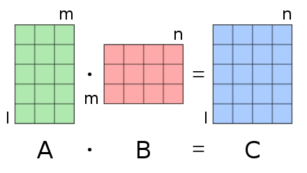

Powers of a matrix

Given a 2 by 2 matrix M of natural numbers, a natural number n and a natural number m, compute M^n.
To avoid overflows, compute every element of M^n \pmod m.
Input: Input consists of several cases, each with M_{1,1}, M_{1,2}, M_{2,1} and M_{2,2} in this order, followed by n and m. Assume that the elements of M are not larger than 500, 0 \leq n \leq 10^9, and 2 \leq m \leq 1000.
Output: For every case, print the elements of M^n \pmod m in two lines following the format of the sample. Print a line with 10 dashes - after every matrix.
After creating a C++ source file to solve the problem, compile it with g++ -std=c++11.
Not using the flag -std=c++11.
Possible useful flags are -Wall -Wextra -Wno-overflow -Wpedantic -Werror -D_GLIBCXX_DEBUG
Test the executable file obtained on the given example(s), for instance with ./a.out < sample.inp > output. Also, test your code against simple/trivial inputs, e.g. a graph with no-edges.
Writing the input by hand.
Not checking the exact formatting of the output.
To see whether the output is the same as sample.cor a way is to use diff output sample.cor
Once the code compiles and on the given samples it gives the correct output submit it to the Jutge for automatic evaluation.
Sending to the Jutge code that was not even compiled locally.
Not checking if the output was correct on the given inputs.
You are “stuck” on a problem if you spent around 1 hour trying to solve it but still the Jutge is rejecting your solution.
Possible approaches to getting “un-stuck” are:
do not think about that problem for some time and come back to your code with fresh eyes
look again at the theory
try to explain your code to another student
ask for hints, e.g. by email. Be specific on the type of help you need. Include in the email the code of your approach.
Similar to P29212 Modular exponentiation. Are we at risk of integer overflow or not?
The standard matrix multiplication algorithm should work, or even done by hand (i.e. without for loops) since the matrices are just 2\times 2.
A couple of days after the class you should also see here a possible solution (if this is not the case please send me a reminder by email).
//Powers of a matrix
#include<iostream>
#include<vector>
using namespace std;
typedef vector<vector<int>> Matrix;
int m;
ostream& operator << (ostream& out, const Matrix& a){
out << a[0][0] << " " << a[0][1] << endl;
out << a[1][0] << " " << a[1][1] << endl;
out << "----------";
return out;
}
Matrix operator*(const Matrix& a, const Matrix& b) {
Matrix c(2, vector<int>(2, 0));
for (int i = 0; i < 2; ++i)
for (int j = 0; j < 2; ++j)
for (int k = 0; k < 2; ++k){
c[i][j] += a[i][k] * b[k][j];
}
return c;
}
Matrix operator%(const Matrix& a, int m){
Matrix c(2,vector<int>(2,0));
for (int i = 0; i < 2; ++i)
for (int j = 0; j < 2; ++j)
c[i][j] = a[i][j] % m;
return c;
}
Matrix identity(){
Matrix id(2,vector<int>(2,0));
for (int i = 0; i < 2; ++i)
id[i][i] = 1;
return id;
}
Matrix power(const Matrix& a, int n, int m){
if (n == 0) return identity();
Matrix c = power(a, n/2, m);
return (n%2==0) ? (c*c) % m : (a*c*c) % m;
}
int main(){
Matrix a(2,vector<int>(2));
int n;
while(cin >> a[0][0] >> a[0][1] >> a[1][0] >>a[1][1] >> n >> m){
cout << power(a,n,m) << endl;
}
}